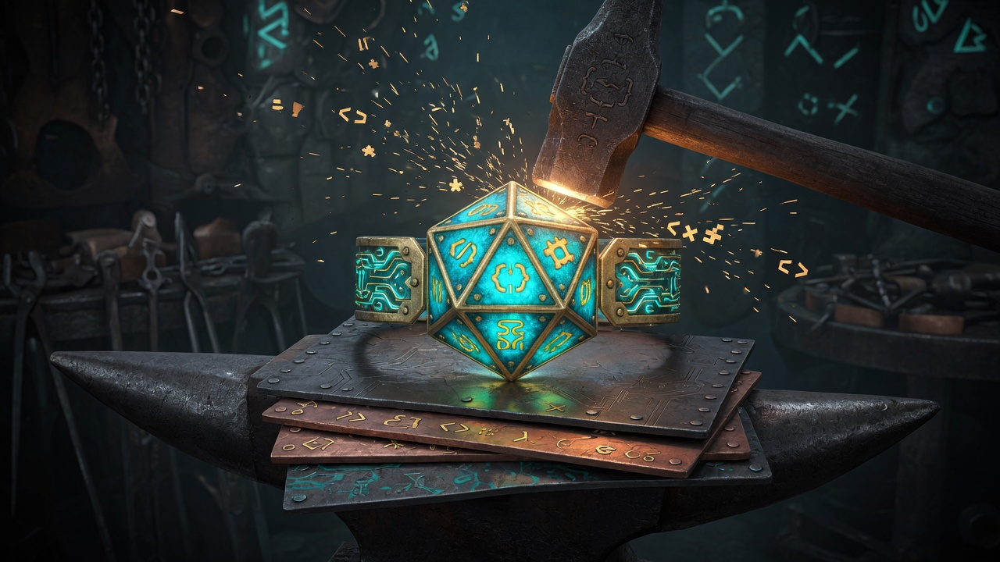

The Book of Grok's Heart
Why entropy sits in the research path
We did not add thermodynamics because it sounds serious. We added it because combinatorics gates close under heat.
field-plate-combinatorics-bridge.py reads thermal advisory and truth blocks before publishing exec_posture. When never_build_under_heat is true and the gate reports ok: false, diagnostic faults include combinatorics_gate — medium severity, thermal entropy gate closed.
Landauer, Shannon, Maxwell — creditors in the engine
Field Primer Chapters 3–4 and 13–15 honor Landauer, Shannon, and Maxwell as creditors — names attached to receipts the stack tries to honor.
In Field Research we use them operationally:
- Landauer: erasing information costs energy. Autosanitize and paranoia block are operator choices, not automatic joule accounting.
- Shannon: entropy measures surprise in packet classification. The entropy oracle (
entropy-oracle.sh) feeds panel slices — proxy entropy, not calorimeter joules. Label honestly. - Maxwell: the demon sorts fast/slow molecules. Our demon is gatekeeper DPI — good traffic at zero nft cost where possible.
Maxwell's demon as gatekeeper is teaching language. The nft rules are Implemented.

Thermal guard and combinatorics
Research finding documented in bridge panel field-plate-combinatorics-bridge.json:
When thermal level hits crit, storm, or critical, combinatorics full cycles may skip. Compatibility layer refresh still runs auto_pipeline: ["truth_publish", "cycle", "bridge"] but holds gates when hold_all_gates: true.
This is why compatibility layers replaced operator combinatorics: the operator should not manually cycle a tree while the silicon is screaming.
Entropy oracle — receipts without pretending
The oracle writes human-readable posture. It does not replace a bench harness. Chapter 13 lists actual ops/s from Grok16/docs/SPEED-BENCH-REPORT.md.
Rule for this book: proxy entropy in panels; joules only when measured.
Clean voltage and ironclad reality field
ironclad-reality-field-doctrine.json caps the truth serum stack: clean voltage, smooth operator, 100% seal. Plate meld includes ironclad_reality_field as a plate source.
When reality field panel degrades, diagnostic mode may engage alongside g1id and io-packet faults.
Research conclusion
Thermodynamics is not a chapter filler. It is a gate input to combinatorics bridge and compatibility refresh. Ignore heat and you build under entropy — the stack literally refuses.
Next: Chapter 4 opens the Grok16 forge — from vendor GCC to the unified g16 driver.